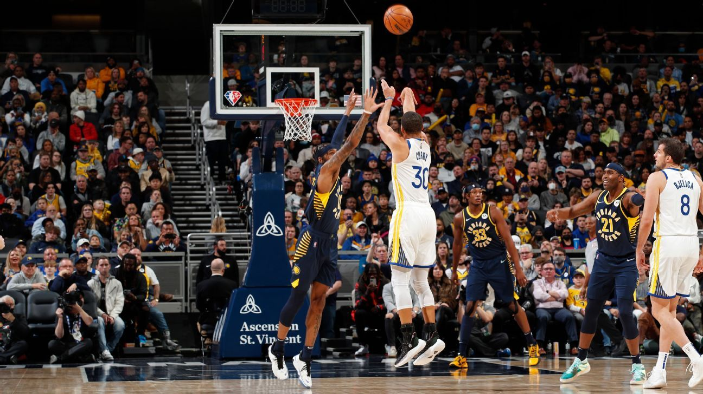
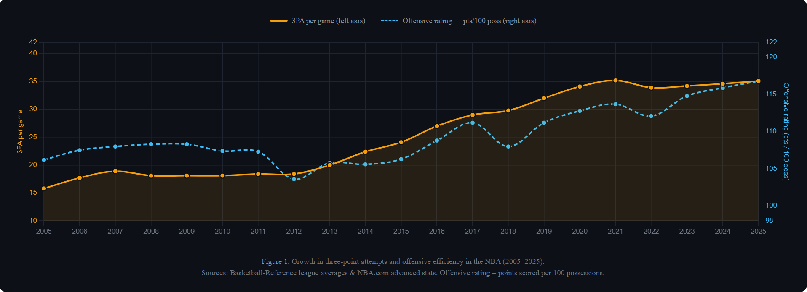
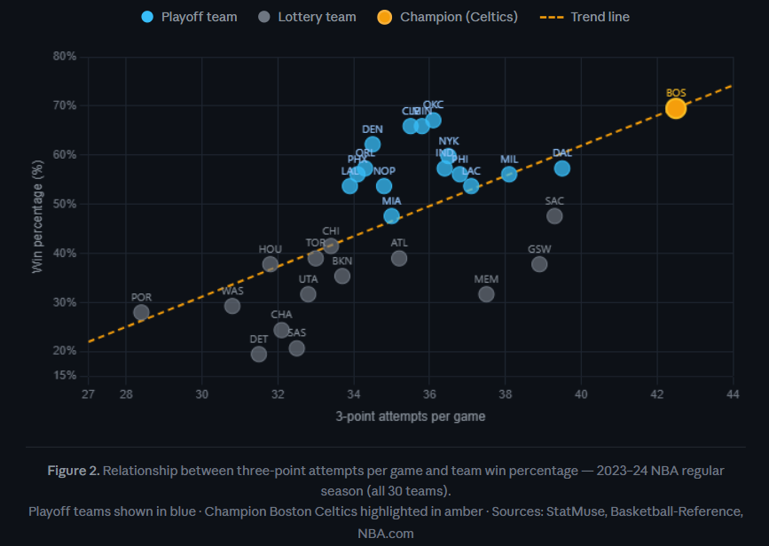
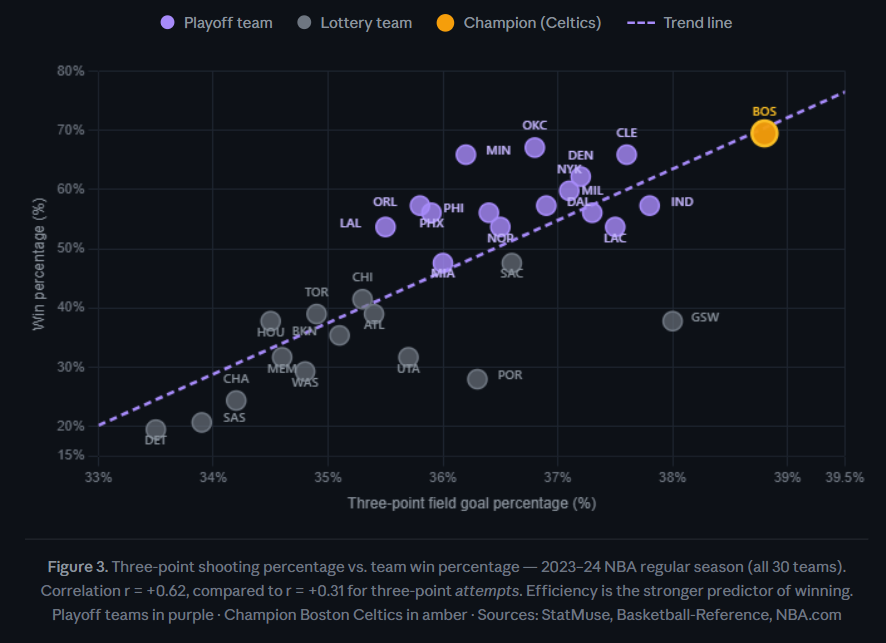
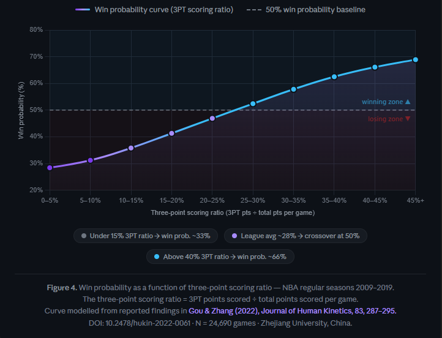
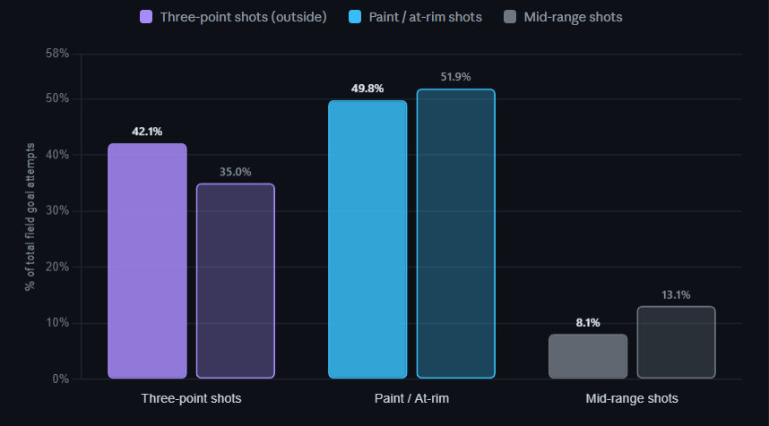

The Three-Point Revolution: How Long-Range Shooting Changed the NBA
By Deeksha Raj | June 11, 2026

Introduction
Over the past 20 years, the NBA has changed dramatically with the growing use of the three-point shot. What was once just an extra option for scoring is now a crucial part of modern offense. Teams now focus on spreading the floor, prioritizing shooting from the outside, and creating systems to get open three-point shots.
This change raises an important question: Does shooting more three-pointers actually make teams better and lead to more wins, or is the effect overhyped? This article examines data from 2005 to 2025 and integrates it with prior research on NBA offensive strategies. It argues that while shooting more three-pointers has certainly helped teams score better and win more, it’s not enough on its own. Success depends on balancing how many shots are taken with how efficient they are and how well the team performs overall.
A League Transformed
The numbers clearly show the change. In 2005, NBA teams averaged about 16 three-point attempts per game. By 2025, that number more than doubled to over 35 attempts per game. This huge increase reflects not just a shift in player preferences but also a better understanding of how valuable the three-point shot is. Three points are worth more than two, and by spreading out the players on the court (a concept called “spacing”), teams create more efficient scoring chances for everyone.
Along with this rise in three-point attempts, the overall offensive efficiency of the league has also improved. Offensive rating, which shows how many points a team scores per 100 possessions, has steadily gone up during this time. This means that, overall, teams are scoring more points each time they have the ball.
When you look at the data together, it’s clear that more three-point attempts are closely linked to higher offensive production. However, it’s important to remember that just shooting more threes doesn’t guarantee success; the efficiency of those shots and the overall performance of the team are key factors as well.

Figure 1: Growth in three-point attempts and offensive efficiency in the NBA (2005–2025)
This dual-axis chart illustrates the dramatic rise in three-point attempts (amber line, left axis) and offensive efficiency (blue dashed line, right axis) in the NBA over the past two decades. As teams increased their three-point shooting volume, offensive efficiency similarly improved, reinforcing the argument that three-point shooting plays a critical role in modern NBA offenses.
However, this relationship is not purely causal. Other factors, such as faster pace, rule changes favoring offense, and increased emphasis on ball movement, have also contributed. Still, the alignment of these trends suggests that three-point shooting has become a central driver of modern offensive success, not just a supporting factor.
Do More Threes Lead to More Wins?
Looking beyond league-wide trends, team-level data reveals a similar pattern. A scatter plot comparing three-point attempts per game with win percentage shows a clear upward trend: teams that shoot more threes tend to win more games.

This chart plots the 30 NBA teams of the 2023–24 season by their three-point attempts per game and win percentage, highlighting playoff teams in blue and the champion Celtics in amber. A weak positive correlation is visible (r ≈ +0.31), suggesting that shooting more threes tends to increase win percentage. However, the spread is large, showing that volume alone doesn't guarantee success. The Celtics, for example, led the league in three-point attempts and won the title, but they also shot 38.8% from deep, the second-best mark in the league. Meanwhile, teams like the Sacramento Kings (SAC) shot a high volume of threes yet failed to make the playoffs, illustrating that efficiency matters just as much as volume.
At first glance, this seems to confirm the idea that increasing three-point volume leads directly to success. However, the relationship is not perfect. Some high-volume three-point teams still struggle, while others succeed with more balanced offensive approaches.
This suggests an important limitation. Simply taking more three-point shots does not guarantee winning. Basketball is a multi-dimensional game where defense, turnovers, rebounding, and overall talent all play significant roles. A team that shoots many threes but lacks defensive discipline or efficient shot selection may not see the same benefits as a well-rounded contender.
Efficiency, Not Just Volume
A deeper analysis reveals a more important insight: efficiency matters more than volume.

This chart highlights the stronger correlation between three-point shooting percentage and win percentage (r = +0.62), compared to the weaker correlation with three-point attempts (r = +0.31). Teams that shoot a higher percentage from beyond the arc tend to have better win percentages. Efficiency, not just volume, is the stronger predictor of success in the NBA. Teams like the Celtics (yellow dot), who excelled in both volume and efficiency, show that balance leads to championships. On the other hand, teams like the Golden State Warriors (GSW, dark gray) attempted a high number of threes but failed to make the playoffs, illustrating that volume without efficiency doesn’t guarantee success.
While teams that attempt more threes generally have higher offensive ratings, the strongest relationship emerges when looking at shooting efficiency. Metrics such as effective field goal percentage (eFG%) and true shooting percentage (TS%) show that the most successful teams are not just shooting more threes, but making them at a high rate.
This suggests the existence of a “sweet spot,” where teams maximize both shot volume and efficiency without sacrificing shot quality. When teams exceed this balance, diminishing returns may occur. Taking contested or low-percentage shots simply to increase three-point volume can reduce overall offensive effectiveness.
This idea is strongly supported by prior research. A study by Huancheng Gou and Hui Zhang (2022), which analyzed over 24,000 NBA games from the 2009 to 2019 seasons, found that increasing the proportion of scoring from three-point shots significantly improves a team's win probability. In contrast, a higher reliance on two-point scoring was found to be negatively correlated with winning. This research highlights the growing importance of three-point shooting in modern NBA offensive strategies.

This chart, from a study by Gou and Zhang (2022), analyzes NBA shooting data from 10 seasons (2009/10 to 2018/19) and demonstrates that increasing the percentage of scoring from three-point shots significantly improves the probability of winning. The study’s findings show that teams with a three-point scoring ratio above 27-28% begin to exceed even odds of winning. Once the ratio surpasses 40%, the win probability climbs to approximately 66%. This S-curve illustrates how essential three-point offense is in achieving competitive success.
The Value of Outside Offense
The same research further reinforces the importance of perimeter-oriented strategies. Teams that emphasized outside offense consistently achieved higher win probabilities compared to those relying more heavily on inside scoring.
In fact, when teams generated a larger share of their points from three-pointers, their win probability approached nearly 60%, compared to roughly 40% for teams with low three-point usage.

This grouped bar chart shows the distribution of field goal attempts by shot type: three-point shots (purple), paint/at-rim shots (blue), and mid-range shots (gray). Strong teams (solid bars) took 42.1% of their shots from beyond the arc, while weak teams (outlined bars) shot only 35.0% from three. The most significant contrast comes from mid-range shots — weak teams took 13.1% of their shots from mid-range compared to only 8.1% for strong teams. The data highlights that while strong teams attack the paint aggressively (50% vs. 52% for weak teams), they replace mid-range attempts with threes, which are more efficient. The shift in shooting philosophy underscores the modern offensive strategy: replace inefficient mid-range shots with more threes.
Another key finding is that strong teams tend to adopt outside-oriented strategies more frequently, while weaker teams rely more on inside scoring. This suggests that three-point shooting is not just a trend, but a defining characteristic of successful modern teams.
Even more compelling, outside-focused strategies improved win probability regardless of opponent strength. Whether facing strong or weak teams, prioritizing three-point offense consistently led to better outcomes.
The Limits of the Three-Point Strategy
Despite the clear advantages of three-point shooting, it is not a complete solution for success.
The data shows that while increased three-point volume is associated with higher offensive efficiency, it does not guarantee wins. Some teams adopt a high-volume three-point strategy without achieving consistent success, highlighting the importance of context.
The most successful teams combine three-point shooting with:
- Strong defensive performance
- Efficient shot selection
- Ball movement and spacing
- High-level individual talent
This reinforces the idea that the three-point revolution is not a shortcut, but rather one component of a broader strategic framework.
The Modern NBA Blueprint
The modern NBA has fully embraced the three-point shot as a core element of offensive strategy. Teams that fail to adapt risk falling behind in both efficiency and competitiveness.
However, the data suggests that the best teams are not simply those that shoot the most threes, but those that use them effectively. The goal is not maximum volume, but optimal decision-making.
In this sense, the three-point revolution represents a shift toward smarter basketball. Teams are no longer just playing faster or shooting more—they are making more analytically informed decisions about shot selection and spacing.
Conclusion
The rise of the three-point shot has fundamentally reshaped the NBA. It has driven improvements in offensive efficiency, changed how teams construct their rosters, and influenced how the game is played at every level.
But the data tells a more nuanced story.
While increased three-point shooting is strongly associated with better offensive performance and higher win probability, it is not sufficient on its own. Success depends on efficiency, balance, and overall team quality.
Ultimately, the three-point revolution is not about shooting more, but rather it is about shooting smarter.